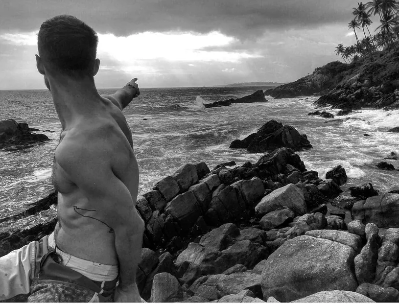
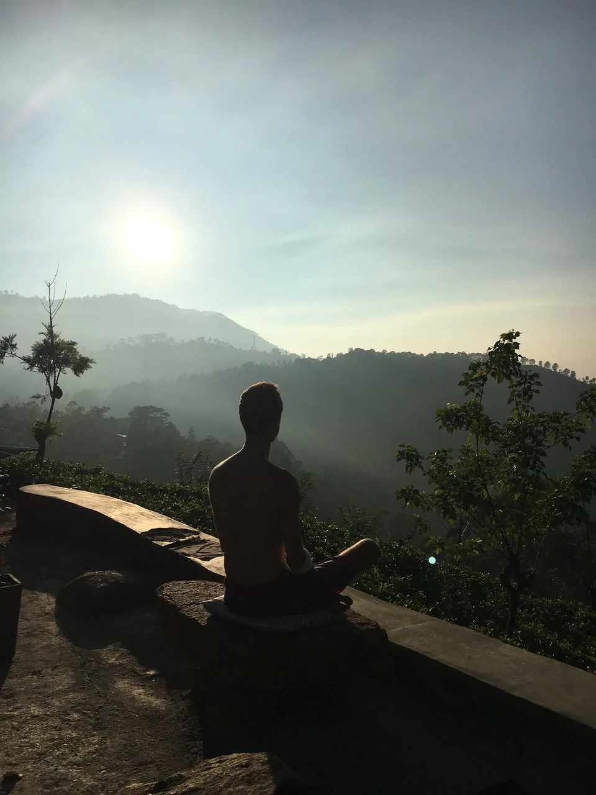

My Story, the extended version
I was 15 when my spiritual journey started.

Kecskemét
I was playing in the garden of our house in Kecskemét in Hungary when a neighbour came over and told me about the Reiki course she had attended a few days earlier. I remember standing there with my jaw dropped listening to her stories about energy healing, angel communication, and esotericism. As if someone rang a bell inside me, recognition slapped me in the face. Maybe all the inexplicable things I felt inside and imagined could be true. Miracles exist, magic is real, and we can have supernatural abilities that are invisible to the eye. I was all over the place. I was so happy, wanting to know about it all. I knew immediately that the time had come, I could discover something that could change my life forever.
A week later I was already attending a weekend course on Reiki (an ancient, hands-on energy healing technique from Japan). We started the workshop with a spirit animal meditation. I met a huge dragon living inside me. I felt his power and greatness. I had never experienced anything like it before. It was an awakening, a soul-shaking, mind-blowing experience.
I was amazed by the stories of incurable patients’ miraculous healings, of archangels and healing light. Practicing the technique on each other was an otherworldly experience as well. It was incredible how the energy became sensible yet almost visible.
This is when I first heard about aura, guardian angels, and meditation.
A whole new world opened up for me. My inner world made sense, and became ever more manifested such that I found a home where I could always return, even in dark times. I felt extremely happy.
At that time I was already aware of my homosexuality. I did not really understand it, but I knew I was different. I did not necessarily feel normal, but my environment did not really help either. So I started to become distant and delve into the esoteric world. I read many books about spirituality. When the Internet became available, I read about techniques that I wanted to experience immediately.
As I turned eighteen I started to come out of my shell, explore myself, and be cautiously open about my sexuality. It was not simple for many reasons, so I felt even more a need to explore the spiritual world and its healing benefits.
I went to spiritual answer therapy and to future-tellers. I tried soul and light surgery.
Budapest
At the age of 20 I moved to the capital, to Budapest, and I suddenly experienced even more a chance to explore myself. But I lost control many times. I drank a great deal of alcohol during college. I became furious as I became free from the years of fear and exclusion. I was not being able to keep control of the dormant lion full of anger inside of me.
I was always seeking love and acceptance, often compulsively so. I needed confirmation that I was normal and loveable. That hectic, hedonistic lifestyle of mine, however, was fortunately always accompanied by spirituality and God’s guidance. So I never truly lost myself completely. My guardian angels had always been pushing me forward towards the Light. I had the urge to become better and better, so I could earn people’s respect.
Bali
In 2010 after college I started working in the fashion industry. A year later I received a one-year scholarship to go to Bali. I was freaking out. I didn’t know what to do. I had just started my career in a glamorous world that had a great deal of allure to me back then. But on the other hand, living on a tropical island under the sun and the palm trees, next to the ocean, had always been a dream of mine too.
I went to Bali and experienced freedom for the first time in my life. I was shining. A month later I received a very tempting job offer and after much inner struggle, I accepted it. I left my soul-dream for my mind-dream. I returned to Budapest.
I was heartbroken leaving that magical experience and Asia. So I started practicing and receiving Prana Nadi treatments (another form of hands-on energy healing). I did several past life regressions to resolve old karmas.
During my twenties I also suffered some severe illnesses, fighting some of them for years. I tried every form of Western medicine. I was on several drastic diets and treatments, but nothing fundamentally shifted and at best I simply experienced short-term results.
While visiting my astrologist / kinesiologist, we discussed at length the possible psychological roots of my symptoms. I started digging deep into the topic. I figured I had to dig deep enough into my psyche to find the emotional reasons underlying my problems, so I could finally rid myself of the illnesses and recover from them fully and forever.
I read more and more books about holistic treatments and alternative medicine. About the human body and mind. And about the power of our thoughts. I tapped into other dimensions, discovered completely different perspectives of life. The contrast between the spiritual world and my superficial existence in the fashion industry, however, started to mess with my mind and my heart. I started to meditate.
I was a maximalist, restless Leo, so I had always been craving for more, for something different. I wanted to develop, learn, and experience something new from my chaotic life back in Hungary.
Berlin
In 2015 I moved to Berlin. The world had opened up and the new environment allowed me to begin loving and accepting myself even more. The moment I chose courage and bought my flight ticket, packed and prepared everything, and made an unwavering decision for myself and for the sake of my freedom, all my symptoms finally disappeared. My doctors couldn’t give me any rational explanation to counter my holistic therapists.
At that time I had been working in the fashion industry for nearly six years already. I realized that besides the possibility of earning more money, there was not much depth for spirituality either. So I was conflicted and was still not entirely finding my place in the world. I had moved to a completely open, cosmopolitan city, but something was still missing. I did not understand what had gone wrong again, why I couldn’t feel complete. The first two years were very difficult. I went through some hardships.
Aromatherapy
At the end of 2016 I was completely unstable again emotionally.
Through a Celestial guidance I felt an urge to learn about aromatherapy. My beauty therapist back in Hungary was an aromatherapist as well. Every time I had visited her for treatments, she enchanted me with them. The essential oils, along with her healing presence, created a wonderful state of mind I had never experienced before. I did not realise the obvious. The answer and tool had been in front of my nose all along, literally.
After a couple of days of research, at the end of January 2017, I was already on a plane again. I remember I had a fever, herpes on my lips, I was completely exhausted emotionally and physically. But the inner guide brought me back to Budapest to take part in a three-day introductory aromatherapy course.
During the workshop I was sitting there like a little child listening to fairy tales, eyes wide open, with a big smile, excitement coloured all across my face. I was drinking my teachers’ words. I was bathing in their radiant, calming presences together with the magical essences. The darkness over my head had started shifting instantly. At the end of each day I wanted to thank them for the experiences, but I could not get myself to say a word. I then fell into my master’s arms while sobbing heavily. I was only a stranger among the other students, but every time it happened she stood there with open arms and open heart. I felt that I had arrived. It was a shocking and liberating moment that I will never forget.
At the end of the three-day training I felt like I had come home. I had found my purpose. All the therapies, techniques, illnesses, life events that I had experienced in the previous 15 years suddenly started to make sense. For the first time in my life I was fully aware and understood that they were part of my journey so I could find the final piece of that puzzle, which was aromatherapy. I signed up for the complete training at the school.
It had become clear that my work in this world would be to heal with the love I had discovered from this beautiful form of Mother Nature.
I returned to Berlin, continued working, but also applied aromatherapy into my everyday life. The wonderful blends helped me to enjoy my days again and to become stable and passionate. For a couple of months I was in a limbo, working in Berlin while also attending the school monthly in Hungary. The process left me with no choice and I likewise had no doubt, that I would have to give up my career in the fashion industry after eight years of hard work and jump head-first into the unknown in order to truly become a healer.
Sri Lanka
In 2017 I found myself with my entire life in a huge suitcase, spending my 30th birthday in Sri Lanka alone on the beach. I spent 6 month there. I studied, rested, reseted, and discovered new dimensions of myself. Finally I could fulfil the dream I had given up back when I had left Bali for my career. I gave up on the idea of home, let go of attachments and unnecessary material needs, and travelled around Asia.

Portugal
In 2018 a new, happier version of myself had returned to Berlin. After a few months I received an invitation to one of Europe’s most renowned yoga retreats, Vale de Moses, as a therapist. I felt in all my cells it was the sign I had been waiting for. I had quit all my jobs, cut all my final ties to the fashion world, and jumped head-first into this new adventure and new life. I moved into the mountains of Portugal.
Today, I only live for healing. I gave up on big city life, I follow the sunshine and nature wherever I go. I have spent most of the past few years in Portugal, and it has become a habit that I return to Asia during the winter months to realign and recharge. To learn about love and myself, outside of my comfort zone.
My masters, healers, colleagues, friends, family, and aromatherapy have taught me to believe in my inner power and in the Divine guidance. They have also taught me how to love unconditionally and how to accept myself fully.
Nowadays I’m in that blessed position that I can help others to heal, to love, to accept, and to believe in themselves. Hardships from my past have become my blessings. They have turned me from a confused, lost, and sad young boy, into a blessed, happy, and vibrant therapist, whose greatest healing tool is LOVE.